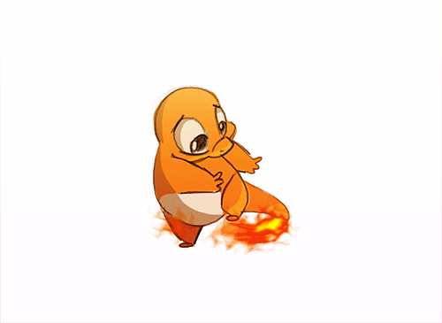
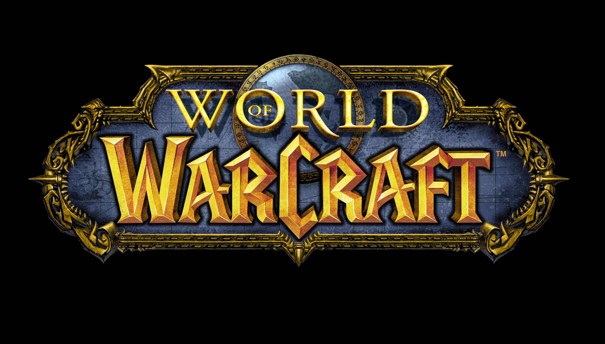

\
\ |
 |
 |
 |

Famous GamesGive us your reviews now! Click here! Madden 2013
With Physics You Can Feel, Madden NFL 13 delivers next generation gameplay today. The all-new Infinity Engine delivers real-time physics, ensuring no two plays will ever LOOK or FEEL the same. Madden NFL 13 revolutionizes the way sports video game career modes are played with Connected Careers—a completely new and fully connected universe defined by deep gameplay, unique storylines and social integration. With cutting-edge Infinity Engine technology, revolutionary Connected Careers and a complete audio and visual overhaul that delivers best in class presentation, Madden NFL 13 is undoubtedly the greatest entry in the franchise’s celebrated history. 4.5/5 stars Call of Duty Black Ops
Black Ops is a first-person shooter, retaining the same gameplay mechanics as previous Call of Duty titles. The player assumes the role of a foot soldier who can wield various firearms (only two of which can be carried at once), throw grenades and other explosives, and use other equipment as weapons. A player close enough to an enemy can kill with one knife blow. A character can take three stances: standing, crouching or prone. Each affects rate of movement, accuracy, and stealth. The player can drop to the prone stance from the standing stance while running, and can momentarily sprint before having to stop. The screen glows red to indicate damage to a player's health, which regenerates over time. When the character is within the blast radius of a live grenade, an on-screen marker indicates where it is in relation to the player, helping the player to move away or to throw it back. Among the weapons new to the series in Black Ops are crossbows with bolts and explosive ammunition, Dragon's Breath rounds and ballistic knives. The player assumes the role of various characters during the single-player campaign, changing perspectives throughout the story. The playable characters are special forces operatives conducting black operations behind enemy lines. In this way, the player's characters have their own traits such as voices and shadows. Each mission features a series of objectives that are displayed on the heads-up dilay, which marks the direction and distance towards and from such objectives as it has been in the earlier versions. The player is accompanied by friendly troops throughout the game. Although primarily a first-person shooter, certain levels feature sequences where the player pilots a Hind helicopter and guides friendly troops from a SR-71 Blackbird reconnaissance aircraft. The campaign features several scripted cinematic moments. One of them is a bullet time effect during the "Victor Charlie" level, activated when the player fires toward the last enemy of a Viet Cong squad. 3.5/5 stars Call of Duty: Ghosts
Like a good sequel should, Call of Duty: Ghosts doesn’t ignore the formula of fast, fluid gameplay that has made the series famous, but introduces a unique new premise, unprecedented player personalization, and sweeping changes that breathe new life into the multiplayer experience. It’s over-the-top and at times unnecessarily complex, but serves both current and next-generation consoles with ambitious new ideas and tremendous replay value. Despite sharing a name with one of Modern Warfare’s best-known characters, Ghosts takes place in an entirely new Call of Duty universe set in the not-too-distant future. In a genre overwrought with antiquated Russian conflicts and ambiguous Middle Eastern terrorist threats, Ghosts takes on a refreshingly unique premise in which the threat comes not from the east, but the south: a federation of oil-rich South American nations rises to take over the hemisphere, pushing north and coming to blows with the U.S. 4/5 stars
Call of Duty Black Ops 2
Strike Force missionsBlack Ops II is the first Call of Duty video game to feature branching storylines, in which the player's choice affects both the current mission and in turn, the overall course of the story. Known as "Strike Force missions", these branching storylines appear during the 2025 storyline and feature permanent death. The success or failure of these missions can have ramifications for the wider campaign storyline. Choosing one of the missions locks out the others unless the player begins a fresh campaign. Strike Force missions allow the player to control a number of different war assets, such as unmanned aerial vehicles, jet fighters and robots. If the player dies in a Strike Force mission, the campaign continues recording that loss, as opposed to letting the player load a previously saved checkpoint. The player's progress in the Strike Force missions may go on to change even the plans of the story's antagonist, Raul Menendez.By the end of the game, the player may have changed the results of the new Cold War, and the player is shown what could have gone differently. ZombiesTreyarch has confirmed that the Zombies mode will return for Black Ops II with new game modes. Its predecessors were Call of Duty: World at War and Call of Duty: Black Ops. This is the third time for the Zombies mode to appear in a Call of Duty game, and the first time to have game modes other than the traditional Survival mode. Treyarch has also confirmed that Zombies will run on the game's multiplayer engine, allowing for a deeper community experience, along with new features. A new, 8 player co-op game called "Grief" is also supported, featuring 2 teams of 4 players competing to survive, unlike Call of Duty: World at War and Call of Duty: Black Ops, which only supported 4 player online co-op. As with the previous game, each map contains "Easter eggs" side quests, which is used to progress the story.
3.5/5 stars Diablo 3
The game takes place in Sanctuary, the dark fantasy world of the Diablo series, twenty years after the events of Diablo II. Deckard Cain and Leah are in Tristram Cathedral (the same cathedral that was the setting of Diablo) investigating ancient texts regarding an ominous prophecy. A mysterious star falling from the sky strikes the Cathedral, creating a deep crater into which Deckard Cain disappears. The protagonist arrives in the town of New Tristram to investigate the falling star which struck the cathedral, which is now emanating risen dead. The protagonist accompanies Leah to the cathedral in order to rescue Cain from the crater into which he fell. After rescuing Cain, the protagonist learns that the only way to the fallen star is to defeat King Leoric, the former ruler of Tristram known now as the 'Skeleton King'. Cain informs the protagonist that Leoric's crown must be recovered to defeat him, and the protagonist searches for Leoric's crown with the aid of Haedrig Eamon, the blacksmith of New Tristram. After recovering the crown, the protagonist returns to the cathedral where he eventually encounters and rescues Kormac, a warrior of the Templar order who has been taken captive by members of a cult known as the Dark Coven. Together, they defeat Leoric and find a stranger where the fallen star landed. The stranger's only memory is of a sword that shattered into three pieces as he fell.
Left 4 Dead
Left 4 Dead (abbreviated L4D) is a singleplayer and multiplayer cooperative survival horror FPS game developed by VIP. The game was built using Source engine and is available on PC and Xbox 360. During early development, its working title was "Terror Strike." The game puts four human playable or AI-controlled Survivors of an apocalyptic pandemic against hordes of the Infected. Regular Infected are controlled by the game AI, while human players can control up to four mutated Special Infected with special abilities in Versus mode. The goal of Left 4 Dead for the Survivors is to help each other make it through a level to safety. Infected players must cooperate to stop them. The basic gameplay never changes from map to map, so players will learn their way around fairly quickly. The Director keeps things from getting monotonous, however, by throwing in different challenges in every level. No two playthroughs are exactly alike.
Left 4 Dead 2
Set in the zombie apocalypse, Left 4 Dead™ 2 (L4D2) is the highly anticipated sequel to the award-winning Left 4 Dead, the #1 co-op game of 2008. This co-operative action horror FPS takes you and your friends through the cities, swamps and cemeteries of the Deep South, from Savannah to New Orleans across five expansive campaigns. You’ll play as one of four new survivors armed with a wide and devastating array of classic and upgraded weapons. In addition to firearms, you’ll also get a chance to take out some aggression on infected with a variety of carnage-creating melee weapons, from chainsaws to axes and even the deadly frying pan. You’ll be putting these weapons to the test against (or playing as in Versus) three horrific and formidable new Special Infected. You’ll also encounter five new “uncommon” common infected, including the terrifying Mudmen 3/5 stars Grand Theft Auto 5
Taking the fundamental concepts of open-world freedom, ambient activity and mission-based gameplay of the Grand Theft Auto series and making them available to multiple players in an incredibly dynamic online world, GTA Online offers the freedom to explore alone or work cooperatively with friends to complete missions. You start by creating and developing a unique character from the ground up and can invest in your potential criminal by customizing his or her appearance, improving their stats, owning customized vehicles, purchasing personal property, and taking part in Jobs, Missions and activities that continually open up new opportunities to rise through the criminal ranks. Grand Theft Auto Online is designed to continually expand and evolve over time with a constant stream of new content, creating the first ever persistent and dynamic GTA game world.
Red Dead Redemption: Undead Nightmare
Unleashed upon the world of Red Dead Redemption, the Undead Nightmare Pack features an entirely new single-player campaign that follows John Marston as he tries to find a cure for the highly-infectious undead plague spreading across the frontier. In addition to this epic single-player adventure, the Undead Nightmare Pack also features a brand new multiplayer mode in addition to new gameplay mechanics, weapons, undead animals and mythical creatures. 3/5 stars Resident Evil 5
As Chris Redfield (former S.T.A.R.S. member and now part of the BSAA unit), your life is in danger as you strive to complete your most dangerous mission yet in a sweltering desert colony where a new breed of evil has been unleashed. Swarms of marauding evil beings will charge at you when your pulse is racing at a heart-shattering pace. Environments will play a bigger factor than ever here, using the power of next-gen systems to create a world where terror might lurk in any alcove or shadow. Powerful lighting effects overwhelm the player with mirage movement and blinding brilliance, and even in the light of day, there is no safe haven in this Resident Evil.
Skyrim
The Elder Scrolls told of their return. The Empire of Tamriel is on the edge. The High King of Skyrim hasbeen murdered. Alliances form as claims to the throne are made. In the midst of this conflict, a far more dangerous, ancient evil is awakened. Dragons, long lost to the passages of the Elder Scrolls, have returned to Tamriel. The future of Skyrim, even the Empire itself, hangs in the balance as they wait for the prophesized Dragonborn to come; a hero born with the power of The Voice, and the only one who can stand amongst the dragons.
World of Warcraft World of Warcraft (WoW) is a massively multiplayer online role-playing game (MMORPG) created in 2004 by Blizzard Entertainment. It is the fourth released game set in the fantasy Warcraft universe, which was first introduced by Warcraft: Orcs & Humans in 1994.World of Warcraft takes place within the Warcraft world of Azeroth, approximately four years after the events at the conclusion of Blizzard's previous Warcraft release, Warcraft III: The Frozen Throne.Blizzard Entertainment announced World of Warcraft on September 2, 2001.The game was released on November 23, 2004, on the 10th anniversary of the Warcraft franchise.The first expansion set of the game, The Burning Crusade, was released on January 16, 2007.The second expansion set, Wrath of the Lich King, was released on November 13, 2008.The third expansion set, Cataclysm, was released on December 7, 2010. The fourth expansion set, Mists of Pandaria, was released on September 25, 2012.The fifth expansion set, Warlords of Draenor, was announced at BlizzCon 2013. With almost seven million subscribers as of August 2014,World of Warcraft is currently the world's most-subscribed MMORPG,and holds the for the most popular MMORPG by subscribers.Having grossed over 10 billion dollars USD as of July 2012, it is also the highest grossing video game of all time, surpassing Call of Duty: Black Ops at 1.5 billion dollars.In January 2014 it was announced that more than 100 million accounts had been created over the game's lifetime Home | Contact Us | Projects | FAQ | Famous Games ©Caitlin Bero 2014 |